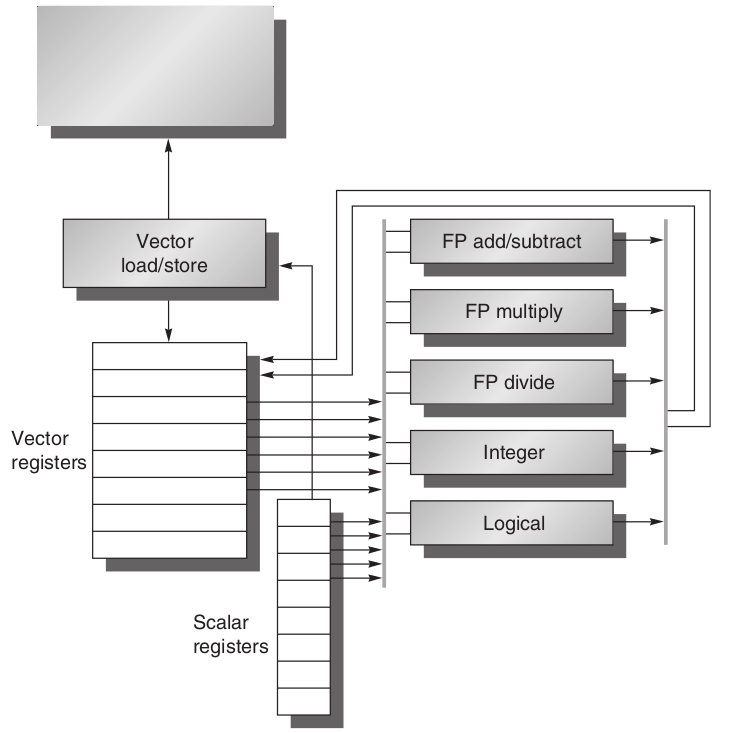

5th GPU部分读书笔记
SIMD的优势：
- Protential Speedup非常高
- 对于程序员来说只需要按照sequential的方式思考，通过SIMD的程序编写即可实现并行
- SIMD宽度每4年翻一倍，SIMD是MIMD的两倍
本章主要讨论Vector Architecture和GPU
4.2 Vector Architecture
vector architecture，将内存中分离的数据元素取出来，放到一个很大的顺序寄存器file中，对其进行操作，然后将其结果分发到内存中去。因此一个单独的指令可能造成很多的register-register操作
这些register file可以起到隐藏memory latency和增加memory bandwidth的作用。一句话说就是，vector能使memory一直busy
